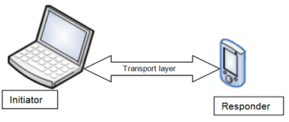
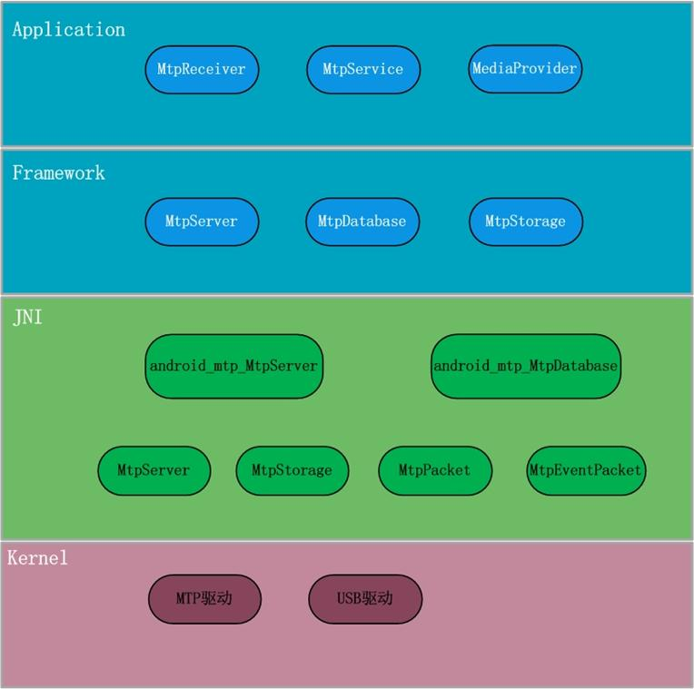

mtp简介
MTP，全称是 Media Transfer Protocol（媒体传输协议）。它是微软的一个为计算机和便携式设备之间传输图像、音乐等所定制的协议。
Android 从3.0开始支持 MTP。MTP 的应用分两种角色，一个是作为 Initiator，另一个作为 Responder 。以”Android 平板电脑”连接 PC 为例，他们的关系如图所示。

Initiator —— 在 MTP 中所有的请求都有 Initiator 发起。例如，PC 请求获取 Android 平板电脑上的文件数据。
Responder —— 它会处理 Initiator 的请求；除此之外，Responder 也会发送 Event 事件。
这里要注意的是：对于一个 MTP 事件，比如从 PC 拷贝数据到 Android 手机中，整个数据处理是双向通信的。
mtp 框架
来张经典的 Android 框架图：

从图中可以看到，在 kernel 层中分为 MTP 驱动和 USB 驱动，其实呢，真正和底层直接通信的依然是 USB 驱动负责，MTP 驱动只是负责将数据进行打包封装，然后作为一层分别与上层和 USB 之间进行通信。
再来看一下 JNI 层，那，如果要对 MTP 进行定制化的开发，这一层就需要额外的关注了。相关的源码位置位于：frameworks/av/media/mtp frameworks/base/media/jni/目录下
在 JNI 层，MtpServer 会不断地监听 Kernel 的消息”MTP 请求”，并对相应的消息进行相关处理。同时，MTP 的 Event 事件也是通过 MtpServer 发送给 MTP 驱动的。 MtpStorage 对应一个”存储单元”；例如，SD 卡就对应一个 MtpStorage。 MtpPacket 和 MtpEventPacket 负责对 MTP 消息进行打包。android_mtp_MtpServer 是一个 JNI 类，它是”JNI 层的 MtpServer 和 Java 层的 MtpServer “沟通的桥梁。android_mtp_MtpDatabase 也是一个 JNI 类，JNI 层通过它实现了对 MtpDatabase (Framework 层)的操作。
在 Framework 层，MtpServer 相当于一个服务器，它通过和底层进行通信从而提供了 MTP 的相关服务。MtpDatabase 充当着数据库的功能，但它本身并没有数据库对数据进行保存，本质上是通过 MediaProvider 数据库获取所需要的数据。MtpStorage 对应一个”存储单元”，它和”JNI 层的 MtpStorage”相对应。
在 Apiplication 层，MtpReceiver 负责接收广播，接收到广播后会启动/关闭 MtpService；例如，MtpReceiver 收到 “Android 设备和 PC 连上”的消息时，会启动 MtpService。 MtpService 的作用是提供管理 MTP 的服务，它会启动 MtpServer，以及将本地存储内容和MTP的内容同步。 MediaProvider 在 MTP 中的角色，是本地存储内容查找和本地内容同步；例如，本地新增一个文件时，MediaProvider 会通知 MtpServer 从而进行 MTP 数据同步。
mtp 移植教程
说了那么多，那如何在 linux 中移植 MTP 协议呢？1
2
3
4
5
6
7
8
9
10
11
12
13
14
15
16
17
18
19
20
21
22
23
24
25
26if (pipe(mtppipe) < 0) {
LOGE("Error creating MTP pipe\n");
return false;
}
/* To enable MTP debug, use the twrp command line feature to
* twrp set tw_mtp_debug 1
*/
//DIR* source=opendir("/tmp");
//DIR* destination=opendir("/data/media/0/backup");
//copy_folder("/tmp","/data/media/0/backup");
twrpMtp *mtp = new twrpMtp(0);
mtppid = mtp->forkserver(mtppipe);
//property_set("sys.usb.config", "mtp,adb");
if (mtppid) {
close(mtppipe[0]); // Host closes read side
mtp_write_fd = mtppipe[1];
//DataManager::SetValue("tw_mtp_enabled", 1);
//Add_All_MTP_Storage();
Add_Remove_MTP_Storage(MTP_MESSAGE_ADD_STORAGE);
return true;
} else {
close(mtppipe[0]);
close(mtppipe[1]);
//gui_err("mtp_fail=Failed to enable MTP");
return false;
}
首先 fork 了进程，通过管道进行通信。那先来看一下父进程做了什么？很简单，初始化了 mtp_message 这个结构体，然后写进 mtp_write_fd ，供子进程读取。该结构体便是控制设备在 PC 端的显示 storage_id 表示该 MTP 设备的 ID 号，path 表示挂载的目录，maxFileSize 表示文件挂载的大小，该值为0表示挂载的大小不做限制，display 是该设备在 PC 端显示的名称1
2
3
4
5
6
7
8
9
10
11
12
13
14
15
16
17
18
LOGI("a[] = %s\n",a);
LOGI("mtp_display = %s\n",mtp_display);
const char *mtp_test=a;
mtp_message.message_type = MTP_MESSAGE_ADD_STORAGE;
mtp_message.storage_id = 1;
mtp_message.path = "/data/media/0";
mtp_message.maxFileSize = 0;
mtp_message.display = PROJECT_NAME;
LOGI("TEST MTP_DISPLAy\n");
LOGI("sending message to add %i '%s' '%s'\n", mtp_message.storage_id, mtp_message.path, mtp_message.display);
if (write(mtp_write_fd, &mtp_message, sizeof(mtp_message)) <= 0) {
LOGI("error sending message to add storage %i\n", mtp_message.storage_id);
return false;
} else {
LOGI("Message sent, add storage ID: %i\n",mtp_message.storage_id);
return true;
}
分析了父进程的流程，再来分析一下子进程所做的事情，MTP 的整个流程都在这了，很简单，主要就几句代码，可是就这几句代码，揭示了 MTP 的大致思想。首先实例化了一个 twmtp_MtpServer，这里的 twmtp_MtpServer 是个性化制定的设备信息（mtp_MtpServer.cpp 和 MtpServer.cpp 的区别）。之后 set_storages，注意了，就是这里，父进程中的写进去的 mtp_message 就是从这里开始读了，上文我们说道了 MtpStorage 对应一个”存储单元”就是在这里体现了,之后会调用 add_storage 函数将父进程读到的信息写入，这样子一个 MtpStorage 就创建。set_read_pipe 指定了读取的管道，这样子就和父进程建立起了链接，之后 mtp->start，开始启动 MTP 服务了1
2
3
4
5
6
7
8int twrpMtp::start(void) {
MTPI("Starting MTP\n");
twmtp_MtpServer *mtp = new twmtp_MtpServer();
mtp->set_storages(mtpstorages);
mtp->set_read_pipe(mtp_read_pipe);
mtp->start();
return 0;
}
来看一下 start 函数，是否使用 PTP（英语“图片传输协议(picture transfer protocol)”的缩写，手机连接之后可选，用于传输图片），实例化一个 MtpDatabase ，MtpDatabase 在 MTP 中，充当着数据库的功能。但它本身并没有数据库对数据进行保存，本质上是通过 MediaProvider 数据库获取所需要的数据。例如，当在 PC 上，需要读取某个文件时，MtpDatabase 会在 MediaProvider 数据库中查询出文件的相关信息(包括文件名、大小、扩展名等)；然后将这些信息交给 MtpServer，MtpServer 将消息传递给 JNI，在 JNI 中会通过文件名打开，然后再文件句柄等信息传递给 Kernel；Kernel 根据文件句柄读取文件信息，并传给 PC。
之后打开 mtp 驱动创建的设备节点 /dev/mtp_usb ，底层驱动我们待会分析。
然后server = new MtpServer(mtpdb, usePtp, 0, 0664, 0775);到这里，终于看到 MTP 协议相关的 server 了，整个 MTP 定义的协议都在这个 class 当中了，这个是 MTP 最核心的东西了。
add_storage();前文提到，就是在这里将我们初始化的 MtpStorage 加入咯
ThreadPtr mtpptr = &twmtp_MtpServer::mtppipe_thread;喏，这里就是读取那个 mtp_message 了，通过创建了一个线程，用于不断读取管道的数据来添加 mtp 设备1
2
3
4
5
6
7
8
9
10
11
12
13
14
15
16
17
18
19
20
21
22
23
24
25
26
27
28
29
30
31
32
33
34
35
36
37
38
39
40void twmtp_MtpServer::start()
{
usePtp = false;
MyMtpDatabase* mtpdb = new MyMtpDatabase();
/* Sleep for a bit before we open the MTP USB device because some
* devices are not ready due to the kernel not responding to our
* sysfs requests right away.
*/
usleep(800000);
const char* mtp_device = EXPAND(USB_MTP_DEVICE);
MTPI("Using '%s' for MTP device.\n", EXPAND(USB_MTP_DEVICE));
const char* mtp_device = "/dev/mtp_usb";
//fp_mtp =fopen( "/recovery/mtp.log", "a+" );
int fd = open(mtp_device, O_RDWR);
if (fd < 0) {
MTPE("could not open MTP driver, errno: %d\n", errno);
return;
}
MTPD("fd: %d\n", fd);
server = new MtpServer(mtpdb, usePtp, 0, 0664, 0775);
refserver = server;
MTPI("created new mtpserver object\n");
add_storage();
MTPD("Starting add / remove mtppipe monitor thread\n");
pthread_t thread;
ThreadPtr mtpptr = &twmtp_MtpServer::mtppipe_thread;
PThreadPtr p = *(PThreadPtr*)&mtpptr;
pthread_create(&thread, NULL, p, this);
// This loop restarts the MTP process if the device is unplugged and replugged in
while (true) {
server->run(fd);
fd = open(mtp_device, O_RDWR);
usleep(800000);
}
}
再来看看 run(fd);函数中的上半段，首先调用 read 函数从 /dev/mtp_usb 中读取数据存入到 mBuffer（实际调用的是 MtpDataPacket::read 函数，该函数还初始化了 mPacketSize，mOffset 两个变量），之后调用了mRequest.getOperationCode mRequest.getTransactionID()两个函数，打开看一下，其实就是对 mBuffer 里面的数据进行处理，要分析为什么这么来的，那就得看 MTP 数据包协议了。
1 | void MtpServer::run(int fd) { |
之后 handleRequest 函数用于处理读到的不同的操作进行不同的操作，每个函数内容都比较多，这里就分析一下从 PC 端拷贝一个数据到手机上的操作，主要做了以下操作,打开看一下，其实都是一些用于解析数据头，之后解析数据的问题了，有兴趣去了解 MTP 协议相关的东西，可以参考去查看一下mtp wiki1
2
3
4
5
6
7
8
9
10case MTP_OPERATION_SEND_OBJECT_INFO:
MTPE("about to call doSendObjectInfo()\n");
//response = MTP_RESPONSE_OBJECT_WRITE_PROTECTED;
response = doSendObjectInfo();
break;
case MTP_OPERATION_SEND_OBJECT:
MTPE("about to call doSendObject()\n");
//response = MTP_RESPONSE_OBJECT_WRITE_PROTECTED;
response = doSendObject();
break;
mtp 与 kernel 层通信
kernel 层 MTP 相关的代码在drivers/usb/gadget/function/f_mtp.c中，通过这部分代码，成功创建了 /dev/mtp_usb 节点1
2
3
4
5
6
7
8
9
10
11
12
13
14
15
16
17
18
19
20
21
22
23
24/* file operations for /dev/mtp_usb */
static const struct file_operations mtp_fops = {
.owner = THIS_MODULE,
.read = mtp_read,
.write = mtp_write,
.unlocked_ioctl = mtp_ioctl,
#ifdef CONFIG_COMPAT
.compat_ioctl = compat_mtp_ioctl,
#endif
.open = mtp_open,
.release = mtp_release,
};
static struct miscdevice mtp_device = {
.minor = MISC_DYNAMIC_MINOR,
.name = mtp_shortname,
.fops = &mtp_fops,
};
static int __mtp_setup(struct mtp_instance *fi_mtp)
{
...
ret = misc_register(&mtp_device);
...
}
从 file_operations 可以知道，上层调用的 write 函数在 kernel 层实则调用的是 mtp_write 函数。现在我们主要来关注一下 mtp_read、mtp_write 这两个函数的实现。
- 先来看一下 mtp_write()，主要的几个处理 copy_from_user(req->buf, buf, xfer) 首先会将用户空间的请求传入到 req->buf 中，之后通过 usb_ep_queue 函数将 req 中的消息传入到 USB 消息队列中，由 USB 驱动进行之后的数据传送，至于 mtp_write 函数的其他部分都是些对数据处理的过程。总的来说，mtp_write 会将”用户空间”发来的消息拷贝到”内核空间”，并将该消息打包；然后，将打包好的消息添加到 USB 消息队列中。USB 驱动负责将消息队列中的消息传递给 PC
1
2
3
4
5
6
7
8
9
10
11static ssize_t mtp_write(struct file *fp, const char __user *buf,
size_t count, loff_t *pos)
{
while (count > 0 || sendZLP) {
if (xfer && copy_from_user(req->buf, buf, xfer)) {
}
...
ret = usb_ep_queue(dev->ep_in, req, GFP_KERNEL);
...
}
} - 再来看一下 mtp_read() 函数,其实就是 mtp_write() 的逆过程，先从 usb 消息队列中读取 pc 发送给 Android 设备的请求并保存在 req 中，之后等待 read_wq 工作队列将已有的消息处理完毕，最后将 pc 的请求数据通过 copy_to_user 拷贝到用户空间。
1
2
3
4
5
6
7
8
9
10
11
12static ssize_t mtp_read(struct file *fp, char __user *buf,
size_t count, loff_t *pos)
{
...
ret = usb_ep_queue(dev->ep_out, req, GFP_KERNEL);
...
ret = wait_event_interruptible(dev->read_wq,
dev->rx_done || dev->state != STATE_BUSY);
...
if (copy_to_user(buf, req->buf, xfer))
...
}总结
其实通过全文的分析，MTP 协议并没有想象中那么复杂，只是对数据进行了封装，整个数据的传送过程实质还是通过 USB 协议进行的。至于在开发中碰到的数据处理问题，需要的是多去了解 MTP 协议的具体内容而已。
This is copyright.